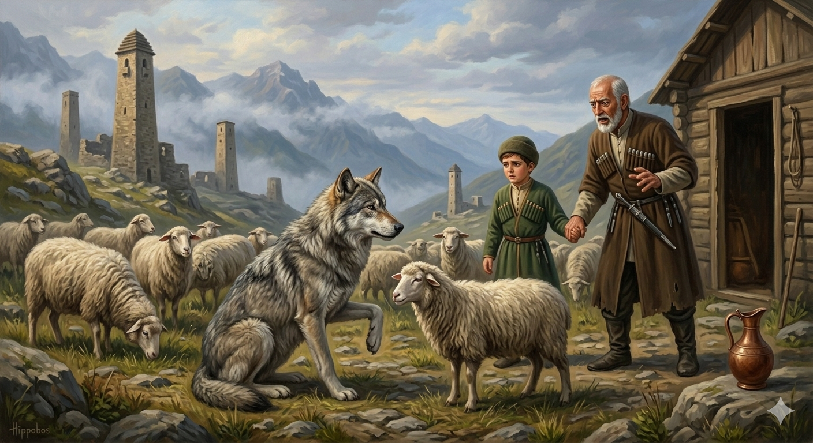

И.А. Дахкильгов. Хьехаме дувцарш - поучительные рассказы-притчи.
И.А. Дахкильгов. Хьехаме дувцарш - поучительные рассказы-притчи. Из ингушского фольклора.

Берзо биа дув
Ший даь жа доажадеш, жега воаллаш хиннав цхьа кӀаьнк. Цкъа бордз тӀаенай цунна. - УстагӀа ба сона, къаеннай со, - аьннад цо, - со кӀалйиса ецаре, аз дехарг а дацар. Ӏа устагӀа лой, аз кхо дика аргда хьона. - Даьга ца хоатташ, хьона устагӀа бала йиш яц са, - аьннад кӀаьнко. - Воле, хӀаьта, дӀахатта хьай даьга. Хьо юхавалцца аз лорадергда хьа жа, - аьннад берзо. - Берзах тийша жа мишта дут аз? - цецваьннав кӀаьк. - Даь юхь ергйоацача дезала да хийла сох, барт ийгӀача дезала да хийла сох, аз шун жа тедаргдале, - аьнна, чӀоаггӀа дув биаб берзо. ЦӀа а ваха, берзо иштта а иштта а йоах, иштта дув а биар, аьнна, дӀадийцад кӀаьнка ший даьга. ТӀаккха дас аьннад: - Жи, юха а вахе, теххе деррига жа дӀалелахь цу берза: биача дувнах сардам а баь, цо из сардам вайха баккхалехьа. Бакъда, берзо цаӀ мара ийцабац.
РУССКИЙ
Клятва волка
Некий мальчик пас овец. Как-то подошел к нему волк и сказал: - Дай мне одну овцу. Я состарился и потому прошу. А так я и без спроса взял бы. Дашь овцу - отблагодарю. - Не могу дать без отцовского позволения. - Тогда иди и спроси, а я пока постерегу овец. - Как я могу их доверить волку? - удивился мальчик. - Да буду я отцом семейства, в котором не чтут отца, и да буду я отцом семейства, в котором нет согласия, если я трону ваших овец! - поклялся волк. Пошел мальчик домой и рассказал все отцу и про просьбу волка, и про его клятву. Тут отец поспешно сказал: - Беги назад и всех овец отдай волку, пока он свою клятву не обратил в проклятие на нас. Но волк взял только одну овцу.
ENGLISH
The Wolf's Oath
Once upon a time, there was a boy who was tending his sheep. One day, a wolf approached him and said, "Give me one of your sheep." I am old now, which is why I am asking. Otherwise, I would simply take one without asking.' If you give me a sheep, I will repay you." "I cannot give you one without my father's permission." "Then go and ask, and I'll watch over the sheep in the meantime." "How can I trust them to a wolf?" the boy asked in surprise. "May I be the father of a family that does not honour its father, and may I be the father of a family where there is no harmony, if I lay a finger on your sheep!" swore the wolf. The boy went home and told his father everything — about the wolf's request and his oath. At this, his father hurriedly said: 'Run back and give all the sheep to the wolf before he turns his oath into a curse upon us.' But the wolf took only one sheep.
НОХЧИЙН
Барзо биъна дуй
Шен ден жа дажош, жехь воллуш хилла цхьа кӀант. Цкъа борз тӀейеъна цунна. - УьстагӀ ба суна, къанйелла со, - аьлла цо, - со кӀелйисна йацхьар, ас доьхур а дацар. Ахь уьстагӀ лой, ас кхоъ дика эр ду хьуна. - Дега ца хоттуш, хьуна уьстагӀ бала йиш йац сан, - аьлла кӀанта. - Воле, хӀета, дӀахатта хьайн дега. Хьо йуха валлалц ас лардийр ду хьан жа, - аьлла барзо. - Барзах тешна жа муха дуьту ас? - цецваьлла кӀант. - Ден сий дийр доцачу доьзалан да хила сох, барт ийгӀина доьзалан да хила сох, ас шун жех катохахь, - аьлла, чӀоггӀа дуй биъна барзо. ЦӀа а вахна, барзо иштта а иштта а бох, иштта дуй а биира, аьлла, дӀадийцина кӀанта шен дега. ТӀаккха дас аьлла: - Же, йуха а гӀуой, хаддош дерриге жа дӀалолахь цу берзан: биъначу дуйнах сардам а бина, цо и сардам вайх баккхале. Бакъду, барзо цхьаъ бен эцна бац.
ПОГОВОРКИ
Берза когаш кадай децаре, берза къоахкаш ира ецаре, бордз аьнна цӀи мича хургьяр цун. Если бы волк не имел резвых ног и острых зубов, его бы и волком не назвали.Боахам дукха безе, гӀув чӀоагӀагӀа бетта. Хочешь сохранить свое добро – ставь крепкий засов.Бордз бордз хиларах цӀи а я цун БОРДЗ. Потому-то и зовут волка ВОЛКОМ, что он воистину волк.“Бордз, бордз”, - яхаш байнаб тха мел байнараш. Все наши умершие тоже в свое время говаривали: “Волк, волк” (т.е. страшали).Дикача хьехамал дикагӀа сагӀа дац. Из всех пожертвований лучшее – добрый совет.Доацачунгара дийхадац, долчунгара мара. У неимущего не просят, а просят у имущего.Жена Ӏунал де бордз ма оттийла. Упаси нас дать овцам волка в пастухи.Сийг боабе аттагӀа да яьнна цӀи йоаечул. Легче искру загасить, чем потушить пожар.СовгӀат денначо сатувс совгӀатага. Подаривший рассчитывает на ответный подарок.ТӀаха ды лелабе, готанна дӀабожа уст лелабе. Держи коня для верховой езды, а быка – для пахоты.Цхьан кхерах гӀала хиннаяц, цхьаьча баьречун саз хезаяц. Из одного камня башню не построить, голос одинокого никому не услышать.Ӏу воаца Ӏул – берзалой фос. Стадо без присмотра – волчья добыча.